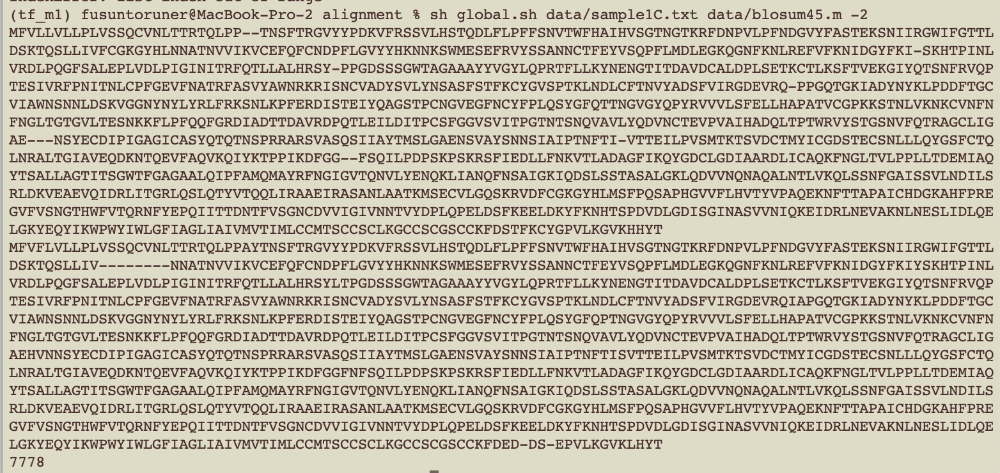
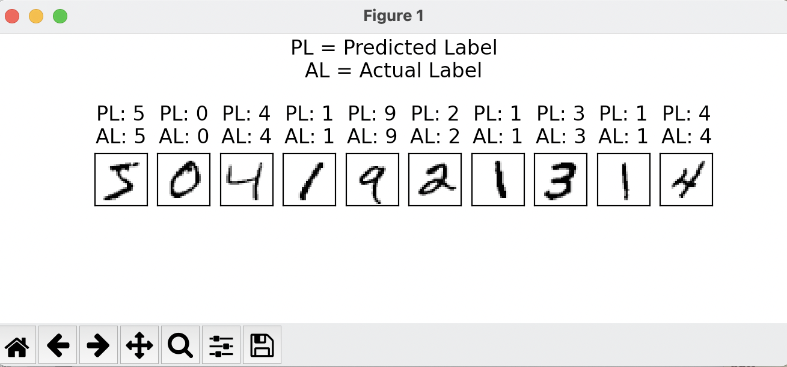

My Works

The use of deep learning models such as convolutional neural networks (CNNs) are found to be accurate in identifying cancers such as Melanoma. However since the melanoma prevalence in Caucasian backgrounds is at least 50% greater, the majority of these deep learning models train on data that is skewed toward lighter skinned images.
Our aim was to utilize deep learning for correcting model bias. By using a style transfer model architecture using convolutional neural networks (CNNs), we were able to take darker skin images and images of skin lesions to produce images of darker skin lesions that could be used for future deep learning model training.
Our app that won the Accenture Prize for Innovation and Technology at Hack at Brown.
As the go-to mobile application for Alzheimer’s disease patients, the app utilizes facial recognition technology to help them to recognize their loved ones (using pre-inputted information). With the _ Touch assist _, our app will guide the patient to interact with the screen and provides additional information for the identified relatives. The app also features geolocation warning, emergency medical card, and a _ family client _ to allow families track the location of the patient. We first utilized Adobe XD to quickly prototype the app functionality and layout. Based on that, we used Swift to code the front end of the project.
Reinforcement Learning: Implemented the SARSA-λ assuming the Q-function is represented using a linear function approximator with Fourier basis functions to solve the mountain car problem.
This project utilized OpenAI's Gym library.

A "global" alignment program that aligns the whole genome of the patient samples to the Spike or surface glycoprotein protein (S) protein sequence of SARS-CoV-2, using the BLOSUM-45 matrix and a gap penalty.
According to the alignment result, the protein sequence aligned with the patient 99%, confirming that the patient is infected with COVID-19 at the time.

A single-layer neural network that classifies the handwritten digits from te MNIST dataset using NumPy.